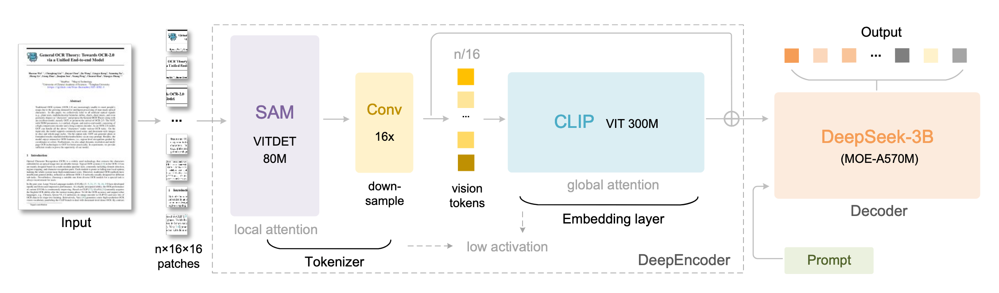
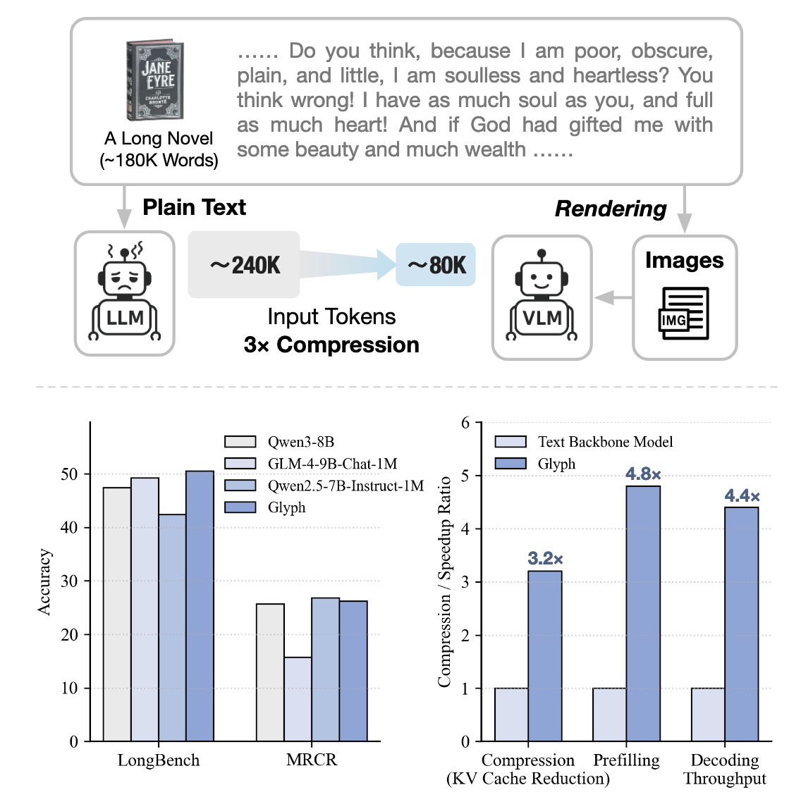
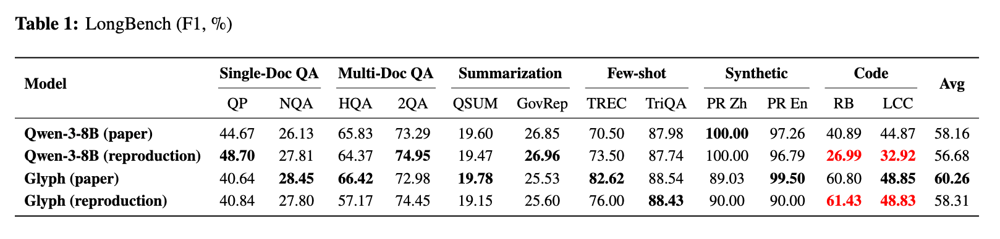
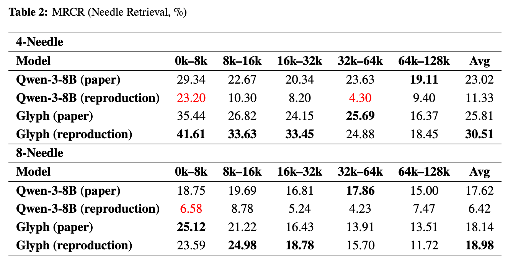
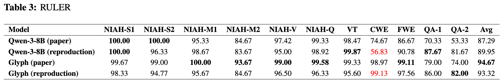

Instead of endlessly stretching attention, Glyph and related systems redesign the input channel itself. This article follows that thread from DeepSeek-OCR to Glyph and walks through the reproduced experiments.
Research Background and Overall Trends
With the rapid development of large language models (LLMs) and vision–language models (VLMs), handling ultra-long contexts under limited computational budgets has become a central challenge. Traditional approaches rely on extending context windows or improving attention mechanisms, yet they still face severe computational bottlenecks at the scale of millions of tokens. Recently, DeepSeek-OCR and Glyph have introduced a fundamentally new paradigm: rendering text as images and feeding them into models in the form of visual tokens, thereby dramatically reducing sequence length. The former demonstrates that, with a dedicated encoder, a compression ratio of 10× can still preserve approximately 97% reconstruction accuracy, validating the feasibility of visual compression; the latter significantly outperforms conventional LLMs on multiple long-context benchmarks, showcasing the potential of this strategy for general-purpose tasks. Together, these works reveal a new direction for long-context modeling—enhancing information density and reducing computational cost through a redesign of input representations.
DeepSeek-OCR: Document Representation via Visual Compression

The core objective of DeepSeek-OCR is to address the high computational cost of ultra-long texts in LLM inference. The paper proposes a fundamentally new input paradigm: rendering text as images and learning highly efficient semantic compression through a specially designed visual encoder, DeepEncoder, thereby significantly reducing the number of input tokens. Unlike
traditional approaches that rely on attention optimization or retrieval augmentation, this method fundamentally rethinks information representation, treating “how to input” rather than “how to compute” as the key breakthrough. The central innovation of DeepSeek-OCR lies in DeepEncoder. Large-scale text is first rendered into high-resolution document images, from which DeepEncoder extracts compact semantic features. Structurally, this module resembles a ViT, but it is specifically optimized for text layout, typography, and spatial distribution, enabling the model to capture structural regularities in two-dimensional layouts rather than performing word-by-word recognition. This design sharply contrasts with conventional VLMs, which typically employ generic visual encoders such as CLIP or ViT as auxiliary modalities for language models, with training objectives focused on image–text matching, captioning, or localization; in such systems, visual features are not responsible for compressing textual information. DeepEncoder, by contrast, is explicitly designed as the primary channel for language modeling: its outputs do not explicitly correspond to individual characters, but instead provide a high-density semantic representation that is decodable by the language model. During training, the model adopts a Next-Token Prediction framework analogous to standard language modeling: visual tokens produced by the encoder are fed into a lightweight text decoder, which predicts the next token, enabling end-to-end cross-modal compression and reconstruction. To more clearly illustrate this innovation, the table below summarizes the key differences between DeepSeek-OCR and conventional vision–language models (VLMs) in terms of design objectives and information flow.
| Dimension | Conventional VLMs (e.g., CLIP, BLIP, LLaVA) | DeepSeek-OCR |
|---|---|---|
| Role of Input | Images serve as an auxiliary modality to the language model | Images replace text and become the primary channel for language modeling |
| Training Objective | Image–text alignment, caption generation, visual question answering | Next-token prediction from visual input (language modeling) |
| Visual Encoder | Generic pretrained encoders (CLIP/ViT), frozen or lightly fine-tuned | Purpose-built DeepEncoder, trained end-to-end to carry full semantics with minimal tokens |
| Feature Representation | Visual features supplement linguistic semantics with low information density | High-density visual latent representations directly consumed by the decoder for text generation |
| Core Task Focus | Multimodal understanding (image → text) | Input compression and long-text modeling (text → image → semantics) |
| Information Flow | Text-dominant, vision-auxiliary decoding | Vision-dominant, language-auxiliary decoding |
| Ultimate Goal | Enhanced multimodal perception | Redesigning the input paradigm to unify textual and visual semantic |
preserved. These findings demonstrate that the visual channel can carry complete semantic information with only a small number of tokens, validating the feasibility of “vision replacing text.” More importantly, DeepEncoder appears to learn an abstraction capability akin to how humans rapidly skim documents: integrating high-level semantics and abstract concepts under limited perceptual bandwidth. As a result, DeepSeek-OCR not only substantially improves input efficiency, but also achieves a natural unification of text and image representations at the representational level, offering a new paradigm for long-context modeling and multimodal integration.
Glyph: From Visual Compression to General-Purpose Long-Context Understanding

In contrast to DeepSeek-OCR, which validates the feasibility of visual compression through a carefully designed, task-specific visual encoder, Glyph adopts a significantly lighter-weight approach. It directly leverages off-the-shelf vision–language models (VLMs) and, without introducing additional architectural modifications, renders long text into images that are then fed into the model. In doing so, Glyph explores the potential of this paradigm for general-purpose tasks. Although the two works were published almost simultaneously, they represent two distinct research trajectories within the same direction: the former emphasizes the upper limits of compression enabled by specialized architectural design, while the latter demonstrates the natural transferability and task generalization of visualized inputs using general-purpose models. Experimental results show that Glyph achieves approximately 3–4× token compression across most tasks while maintaining accuracy comparable to mainstream LLMs such as Qwen-3-8B. The authors further report around 4× acceleration in both prefill and decode stages, as well as roughly 2× speedup in supervised fine-tuning (SFT). More aggressive estimates suggest that, when paired with a VLM supporting a 128K context window, this approach could theoretically scale to processing text at the million-token level.
Reproducing Glyph Experiments
To validate the performance of Glyph on general-purpose ultra-long-context datasets, we conducted a systematic reproduction and detailed analysis of the experiments reported in the original paper. This section examines the experimental setup, key benchmarks, performance comparisons, and token consumption in order to assess the practical effectiveness of visualized inputs for long-context modeling.
LongBench
From a breakdown by task category, Qwen shows a slight advantage on most natural language tasks such as question answering and summarization, but exhibits clear weaknesses on code-related and logical reasoning tasks. This likely indicates that, in long-document

settings, Qwen is able to preserve a high-level semantic understanding, yet struggles to maintain fidelity to fine-grained details, symbols, and logical structure. In contrast, by leveraging visual token compression, Glyph is better at preserving structured information, and therefore performs more strongly on tasks that require logical reasoning or structural consistency.
| Dimension | RB (Code Reasoning / Bug Detection) | LCC (Logical Commonsense) |
|---|---|---|
| Task Type | Code understanding and reasoning | Logical cloze and commonsense reasoning |
| Input | Long code files (thousands of lines in Python / C / Java, etc.) | Long reasoning passages or narrative texts with missing spans |
| Model Objective | Answer questions about function calls, variable dependencies, and logical errors | Select the option that best fits the logical flow and context to complete the missing sentence |
| Evaluated Capabilities | Structured logical reasoning; symbolic dependency tracking; long-range integration | Logical coherence; cross-sentence reasoning and commonsense consistency |
MRCR
Qwen natively supports only a 32K-token context. In our reproduction, we extended its context length to 131K using YaRN-based RoPE scaling. In addition, the MRCR benchmark inserts a unique random string into each input sample to verify whether the model strictly follows instructions rather than directly outputting memorized answers. Because Qwen was unable to reliably reproduce this random string in practice, we relaxed (i.e., removed) this constraint when reporting its performance, in order to ensure comparability of the evaluation results. Under this extremely long-context, multi-needle retrieval setting, Qwen exhibits pronounced degradation, displaying a typical failure of long-range attention. In contrast, Glyph maintains substantially better retrieval stability. Notably, the reproduced results for Qwen are significantly lower than those reported in the original paper, suggesting that the original evaluation may have relied on specialized prompt templates, temperature tuning, or context truncation strategies. Conversely, the average performance of Glyph in our reproduction substantially exceeds the numbers reported in the original work, indicating that the paper may have been based on an earlier model version or insufficiently tuned experimental settings.

RULER

Both models approach the performance ceiling on the NIAH task in the RULER benchmark. The primary differences emerge in CWE and FWE. In these more complex settings, Glyph significantly outperforms Qwen-3-8B, demonstrating stronger capabilities in ultra-long-context understanding and information aggregation. These results indicate that Glyph’s compressed token representations are more effective at preserving semantic consistency and logical coherence when handling structured information that appears repeatedly across extremely long contexts.
| Dimension | CWE (Common Words Extraction) | FWE (Frequent Words Extraction) |
|---|---|---|
| Task Definition | A small set of common words is embedded in an extremely long context dominated by uncommon words; the model must identify or output them. | Similar to CWE, but with word frequencies following a Zipfian/Zeta distribution; the model must return the most frequent words. |
| Frequency Distribution | Artificially controlled, near-uniform among target words | Natural, heavy-tailed (Zipfian) distribution |
| Core Objective | Identify high-frequency targets scattered amid heavy noise | Identify the most frequently occurring elements under realistic distributions |
| Capability Evaluated | Long-context statistical aggregation; robustness to noise | Aggregation under non-uniform frequencies; realistic frequency modeling |
Token Consumption Comparison
Overall, Glyph consumes only approximately one-half to one-third of the tokens used by Qwen-3-8B across all benchmarks, while maintaining—or even surpassing—the latter in task performance. This result demonstrates that, by introducing visual token representations, Glyph achieves efficient compression and modeling of ultra-long textual inputs, significantly improving inference efficiency without sacrificing semantic fidelity. Notably, on the RULER benchmark, Glyph’s advantage is further amplified due to the combined effect of extremely long inputs and very short outputs. In this setting, the number of completion tokens required by Glyph is reduced by a factor of 5–6 compared to Qwen-3-8B, reflecting systematic improvements in high-context compression, instruction adherence, and generation stability. This behavior is not an outlier, but rather a natural consequence of Glyph’s architectural advantages under extreme long-context conditions.
| Benchmark | Metric | Glyph | Qwen-3-8B | Relative Reduction |
|---|---|---|---|---|
| LongBench | prompt tokens | 16,312,000 | 46,382,000 | ↓ 64.8 % (≈ 2.84× fewer) |
| completion tokens | 585,000 | 1,727,000 | ↓ 66.1 % (≈ 2.95× fewer) | |
| total tokens | 16,896,258 | 48,108,687 | ↓ 64.9 % (≈ 2.85×) | |
| MRCR (4-Needle) | prompt tokens | 2,971,242 | 7,966,479 | ↓ 62.7 % (≈ 2.68×) |
| completion tokens | 110,372 | 277,373 | ↓ 60.2 % (≈ 2.51×) | |
| total tokens | 3,081,614 | 8,243,852 | ↓ 62.6 % (≈ 2.68×) | |
| MRCR (8-Needle) | prompt tokens | 3,085,702 | 9,010,796 | ↓ 65.8 % (≈ 2.92×) |
| completion tokens | 102,982 | 271,164 | ↓ 62.0 % (≈ 2.63×) | |
| total tokens | 3,188,684 | 9,281,960 | ↓ 65.6 % (≈ 2.91×) | |
| RULER | prompt tokens | 11,746,612 | 26,477,371 | ↓ 55.6 % (≈ 2.26×) |
| completion tokens | 176,966 | 1,028,359 | ↓ 82.8 % (≈ 5.81×) | |
| total tokens | 11,923,578 | 27,505,730 | ↓ 56.7 % (≈ 2.31×) |
Throughput Comparison
| Token Length / Stage | Glyph (Image Input) Throughput (tok/s) | Glyph (Text Rendering) Throughput (tok/s) | Qwen3-8B Throughput (tok/s) | Speedup (Qwen / Glyph–Image) |
|---|---|---|---|---|
| 1k | 20,526.14 | 16,541.51 | 41,339.04 | 2.0x |
| 2k | 29,343.18 | 25,043.26 | 87,205.66 | 3.0x |
| 4k | 37,169.74 | 31,308.02 | 153,358.10 | 4.1x |
| 8k | 39,848.72 | 35,516.59 | 251,683.13 | 6.3x |
| 16k | 41,631.54 | 36,458.34 | 365,979.35 | 8.8x |
| 32k | 36,479.20 | 34,976.91 | 454,355.08 | 12.5x |
| 64k | 36,259.68 | 35,834.62 | 507,545.36 | 14.0x |
| Decode | 203.54 | 203.16 | 240.09 | 1.2x |
We evaluated the throughput of Glyph and Qwen3-8B across different input lengths, with the results summarized in the table. Based on these results, the following observations can be made: • Prefill-stage performance is strongly correlated with input length. Glyph’s prefill throughput plateaus beyond 8k tokens, whereas Qwen3-8B continues to scale noticeably with increasing context length. This indicates that text-based models exhibit better scalability during the prefill stage, while Glyph’s bottleneck primarily stems from visual feature encoding and image input bandwidth. • Rendering overhead is only significant for short contexts. Compared to Glyph (image input), Glyph (text rendering input) shows slightly lower throughput in the 1–2k range; however, as context length increases, the gap gradually shrinks to within 1%. This suggests that, in long- sequence scenarios, performance bottlenecks are dominated by model computation rather than the rendering process itself. • Decode-stage performance is comparable. When the output length is fixed at 256 tokens, Glyph achieves throughput similar to Qwen3-8B, with differences of only around 1.2×. This implies that generation efficiency is largely determined by decoder architecture and parallelization strategies, and is relatively insensitive to the input modality. Overall, while Glyph achieves decoding efficiency comparable to text-based models, it exhibits a clear throughput bottleneck during the prefill stage, primarily due to the computational and data-transfer overhead of the visual frontend.
LM Harness Performance Comparison
We conducted a systematic evaluation of Glyph on the standard LM Harness benchmark, comparing it against its base model, GLM-4.1V-9B, as well as the reference text model Qwen3-8B. Overall, the results indicate that Glyph performs robustly across most tasks and exhibits clear advantages on several long-context and logical reasoning benchmarks. The detailed results are summarized in the table below.
| Model | MMLU acc | HellaSwag acc | ARC acc | BBH EM | GSM8K EM | TruthQA MC1 | TruthQA MC2 | TruthQA Gen BLEU | HumanEval p@1 | RULER acc |
|---|---|---|---|---|---|---|---|---|---|---|
| Glyph | 66.75 | 61.50 | 84.73 | 60.26 | 35.99 | 56.43 | 75.82 | 45.78 | 28.05 | 96.66 |
| GLM-4.1V-9B | 72.50 | 60.22 | 54.52 | 53.20 | 74.21 | 36.47 | 84.46 | 45.53 | 60.37 | 93.74 |
| Qwen3-8B | 72.97 | 79.37 | 88.17 | 57.12 | 54.40 | 36.47 | 55.80 | 59.98 | 64.02 | 94.13 |
be related to pretraining data distribution or alignment with evaluation templates. As an open- ended factual consistency benchmark, TruthfulQA features question stems and answer templates that frequently appear in instruction-tuning corpora; thus, Glyph’s unexpectedly strong performance may again reflect that visual inputs more easily capture implicit patterns in question formats or keyword positioning. In contrast, Glyph shows noticeable degradation relative to its base model on high-intensity reasoning and mathematical tasks such as BBH and GSM8K. The former primarily evaluates coherence across multi-step reasoning chains, while the latter requires precise numerical and symbolic computation. On these tasks, Glyph underperforms GLM-4.1V-9B by an average of approximately 10 percentage points, suggesting that visualized inputs still suffer from information dilution in scenarios requiring exact symbolic manipulation and long-chain reasoning. Possible contributing factors include the weakening of local logical cues due to visual token compression, difficulties for the decoder in maintaining equation consistency when processing non-linear layouts, and limitations in generating precise numerical symbol sequences from continuous visual semantic representations. On the HumanEval code generation benchmark, Glyph performs significantly worse than text- based models. Analysis of the outputs reveals that the primary issue lies in format non- compliance: HumanEval requires the output to be a complete, directly executable function definition, whereas Glyph often intermixes explanatory text or natural-language comments with code, causing most samples to fail automatic evaluation. Because samples with formatting errors cannot be executed, their true reasoning correctness cannot be reliably assessed. This highlights that, for tasks requiring strict adherence to output templates, visualized inputs still face challenges in format control and output constraint enforcement. On long-context tasks such as RULER, Glyph achieves the highest accuracy at 96.66, validating its strong ability to aggregate semantics and maintain consistency under extremely long inputs. Overall, aside from the anomalously high scores on ARC and TruthfulQA (MC1), Glyph exhibits mild performance degradation relative to its base model on several reasoning tasks, yet remains stable overall. These results indicate that, under visualized input conditions, Glyph retains strong semantic understanding and task generalization capabilities, while also revealing clear strengths and limitations across different reasoning regimes.
Experimental Summary
Overall, the experimental results clearly validate the effectiveness of visualized inputs for general-purpose long-context tasks. Compared with traditional text-based LLMs, Glyph demonstrates substantially higher token efficiency on multiple long-context benchmarks such as LongBench, MRCR, and RULER, while also significantly outperforming Qwen-3-8B on complex tasks. Without sacrificing overall accuracy, Glyph reduces token consumption to approximately one-half to one-third of that of Qwen. The performance gains are particularly pronounced on tasks that demand strong long- range dependency modeling and information aggregation (e.g., MRCR, CWE, and FWE). These findings indicate that visual token representations not only improve input compression efficiency, but also preserve—and in high-compression regimes even strengthen—semantic reasoning and structured understanding capabilities. However, throughput evaluations reveal clear bottlenecks in Glyph’s inference efficiency. Relative to text-based models, Glyph exhibits consistently lower throughput during the prefill stage, with the gap widening as input length increases, indicating limited scalability of the visual frontend under ultra-long contexts. This degradation primarily arises from the high fixed
costs of visual encoding and data transfer, which prevent computation from being amortized as effectively as in text-based pipelines when sequence length grows. Although decode-stage performance is comparable between the two models, prefill inefficiency remains the dominant practical limitation of Glyph in real-world inference. On the standard LM Harness benchmark, Glyph shows a pronounced polarization in performance. It excels on structured and long-range reasoning tasks such as ARC and RULER, but exhibits degradation on symbolic reasoning (GSM8K, BBH) and code generation (HumanEval). Some anomalously high scores (e.g., ARC and TruthfulQA MC1) may be attributable to overlap with pretraining data or differences in prompt templates, highlighting the complexity and potential controversy of evaluating this paradigm. Overall, the performance distribution suggests that visualized inputs offer clear advantages in semantic aggregation and format-aware understanding, while still facing limitations in precise symbolic computation and output control. In summary, Glyph achieves significant gains in input compression and long-context modeling while maintaining stable semantic performance. At the same time, its throughput bottlenecks and task-specific weaknesses indicate that visualized inputs require further optimization in computational efficiency and output regularization before they can serve as a fully general replacement for text-based input pipelines.
Conclusion and Outlook
This report presents an analysis and systematic reproduction of two recent studies, DeepSeek- OCR and Glyph. Together, they represent two complementary paths for visualized inputs in long-context modeling: the former explores the feasibility of extreme compression through a purpose-built visual encoder, while the latter validates the natural generalization capability of off-the-shelf vision–language models on long-text tasks. Experimental results show that, without modifying the Transformer architecture, a substantial increase in information density and computational efficiency can be achieved solely by redesigning the input representation. From a broader perspective, Glyph and DeepSeek-OCR jointly suggest that the fundamental bottleneck in long-context modeling lies not in the attention mechanism itself, but in the information density of the input representation. By restructuring the input modality and encoding linguistic semantics through the visual channel, inference efficiency can be significantly improved without altering the Transformer backbone. Importantly, the emergence of this direction is not accidental, but rather a natural outcome of the co-evolution of LLMs and VLMs. The rapid progress of large language models has provided a unified semantic interface for visual models, while advances in vision–language modeling have endowed image inputs with high-fidelity semantic understanding. As these capabilities converge, visualized inputs have become practically viable for the first time. This input paradigm can simultaneously carry textual semantics and achieve higher information compression via the visual channel. Such cross-modal integration was not mature several years ago; only with recent advances in model capacity, compute, and ecosystem support has Glyph emerged as the first successful validation of this new paradigm. At the same time, our systematic reproduction highlights the dual nature of visualized inputs in practice. On the one hand, Glyph demonstrates clear advantages in token efficiency and semantic fidelity, achieving stable or even superior performance to text-based models on multiple long-context and structured tasks. On the other hand, it exhibits notable bottlenecks
in inference throughput and task adaptability. Throughput experiments show that Glyph’s prefill stage is constrained by visual encoding and data bandwidth, with the performance gap widening as input length increases—indicating that current visual frontends struggle to match the scalability of highly optimized text pipelines. LM Harness results further reveal an uneven performance distribution: the model excels on structured and format-sensitive tasks (e.g., ARC, RULER), but degrades on symbolic reasoning and code generation, alongside potential issues of data overlap and template dependence. Taken together, these findings suggest that while visualized inputs achieve breakthroughs in information density, further optimization and validation are required in compute efficiency and evaluation robustness. Overall, the “visual token representation” paradigm exemplified by Glyph holds substantial promise. Current implementations rely on relatively straightforward VLM architectures that process rendered text images using generic visual encoders. Looking ahead, incorporating ideas from DeepSeek-OCR—such as designing visual encoders specifically optimized for text visualization—may enable further reductions in input tokens while improving semantic fidelity and overall performance. More fundamentally, this paradigm realizes a deeper form of multimodal fusion: it carries not only linguistic semantics but also visual attributes such as typography, layout, and spatial structure, seamlessly coupling language and vision within a unified representation space. Such a unified input modality opens new possibilities for the evolution of large language models—moving beyond linear text sequences toward a form of “visualized thinking”—and may further expand the upper bounds of understanding, reasoning, and generation in general artificial intelligence.